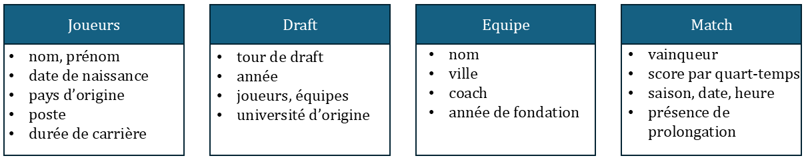
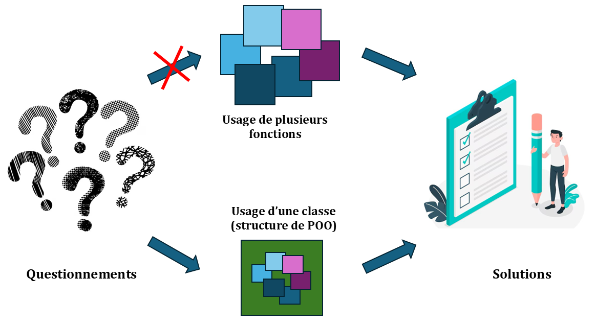
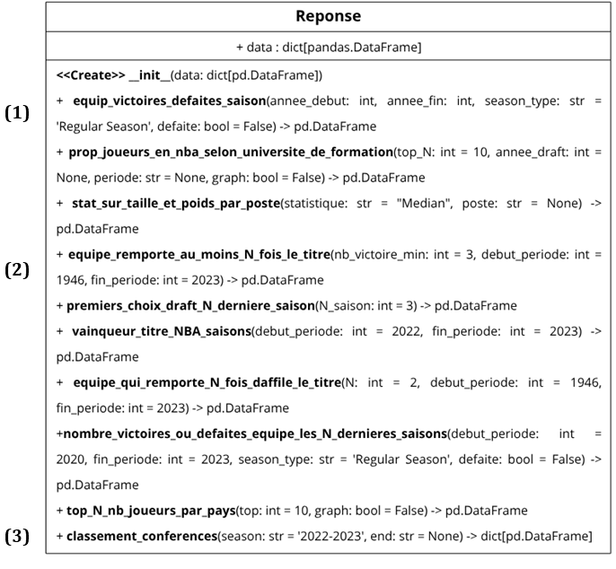
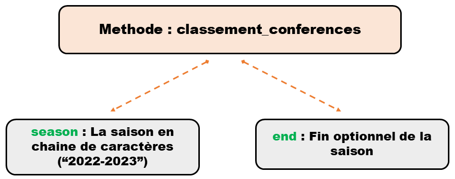
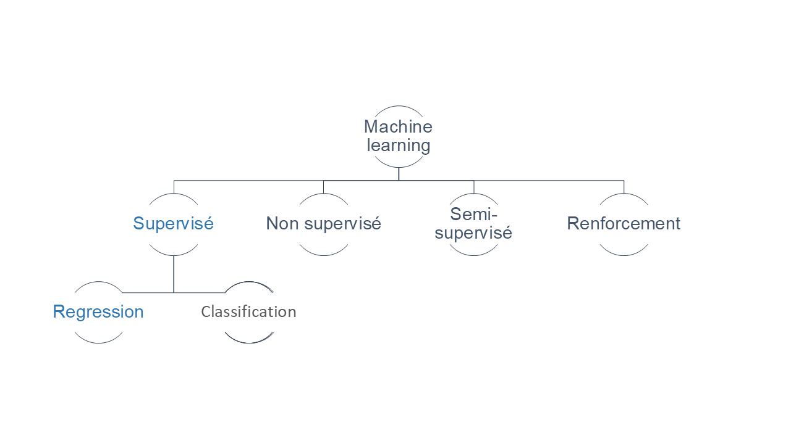
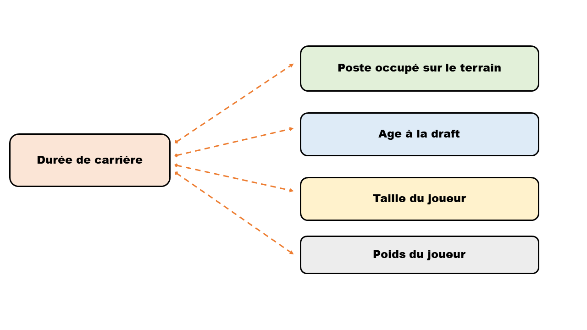
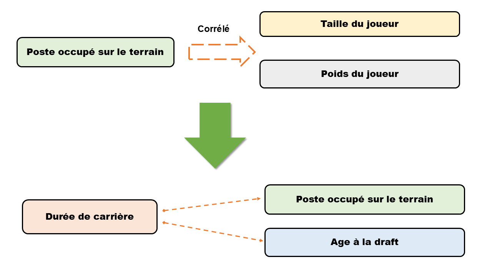

Prédiction de la durée de carrière des joueurs NBA
Introduction
La National Basketball Association ?
Ligue professionnelle de basketball la plus compétitive au monde
30 équipes (Est et Ouest), 82 matchs de saison régulière
Données riches et variées sur l’ensemble de la ligue :
suivi très détaillé des performances
des archives complètes depuis plus de 75 ans
Problématique : Prédire la durée de carrière des joueurs nouvellement draftés
Objectifs
Objectif 1 : identifier des questions décrivant le jeu de données
Analyse exploratoire des données afin de répondre à 10 interrogations
Questions explorant différentes dimensions du basketball (équipes, les joueurs, les matchs, les play-offs ou encore la draft)
. . .
Objectif 2 : prédire la durée de carrière des joueurs NBA
- Spécification et ajustement d’un modèle d’apprentissage automatique
. . .
Objectif 3 : développer et déployer une application
- Création d’ interfaces interactives pour afficher les réponses aux questions et d’autres informations sur la NBA
Présentation du jeu de données (Source Kaggle)
Travail de préparation des données :
- Intégration manuelle des vainqueurs NBA manquants;
- harmonisation des noms de franchises :
Philadelphia Warriors ⇒ San Francisco Warriors ⇒ Golden State Warriors
Programmation orientée objet
Pourquoi avons-nous utilisé des classes ?

Présentation de la classe Reponse
class Reponse:
def __init__(self, data: dict[pd.DataFrame]):
# Réalisons les tests nécessaire sur l'objet data
if (
not isinstance(data, dict)
):
raise TypeError("L'argument data doit être un dictionnaire.")
if (
any(not isinstance(data[key], pd.DataFrame) for key in data.keys())
):
raise TypeError("Toutes les valeurs des clés doivents être des "
"pandas.DataFrame.")
# Testons qu'on a bien la clé common_player_info dans le dictionnaire
if ("draft_history" not in data.keys()):
raise KeyError("La clé 'draft_history' ne fait pas parti du dictionnaire")
if ("common_player_info" not in data.keys()):
raise KeyError("La clé 'common_player_info' ne fait pas parti du "
"dictionnaire")
if ("game" not in data.keys()):
raise KeyError("La clé 'game' ne fait pas parti du dictionnaire")
self.data = copy.deepcopy(data)Entrée :
- Dictionnaire de tables
Vérification des entrées :
- Le type des entrées est vérifié
Présence des tables d’intérêt dans le dictionnaire
- Exceptions levées : TypError, KeyError
Les méthodes de la classe Reponse

⇐ Les méthodes indexées :
(1) retourne une table contenant le nombre de victoires ou de défaites pour chaque équipe entre les saisons données.
(2) retourne une table listant les équipes ayant remporté au moins le nombre de titres requis.
(3) retourne un dictionnaire contenant deux tables, un pour chaque conférence (Est et Ouest).
La méthode equip_victoires_defaites_saison et ses usages
def equip_victoires_defaites_saison(self, annee_debut: int, annee_fin: int,
season_type: str = 'Regular Season',
defaite: bool = False) -> pd.DataFrame:Entrées : période – type de saison – l’issue du match
Traitement pour l’obtention du nombre de victoires ou de défaites :
# Détermination des équipes en fonction du résultat souhaité
game_chosen_season['Equipes'] = np.where(
((game_chosen_season['wl_home'] == "W") & (not defaite)) |
((game_chosen_season['wl_home'] == "L") & defaite),
game_chosen_season['team_name_home'],
game_chosen_season['team_name_away']
)
# Agrégation des résultats
results = game_chosen_season.groupby(["season_years", "Equipes"]).aggregate({
'wl_home': 'count',
'Equipes': 'first',
'season_years': 'first'
}).reset_index(drop=True)La méthode equipe_remporte_au_moins_N_fois_le_titre
def equipe_remporte_au_moins_N_fois_le_titre(self, nb_victoire_min: int = 3,
debut_periode: int = 1946,
fin_periode: int = 2023
) -> pd.DataFrame
(1) nba_champions_manquant = {
"1957-1958": "Atlanta Hawks", "1958-1959": "Boston Celtics", "1960-1961": "Boston Celtics",
"1964-1965": "Boston Celtics", "1968-1969": "Boston Celtics", "1993-1994": "Houston Rockets",
"1995-1996": "Chicago Bulls", "1999-2000": "Los Angeles Lakers", "2001-2002": "Los Angeles Lakers", "2005-2006": "Miami Heat"
}Sélection des données
Identification des vainqueurs de chaque saison
Alimentation des résultats (1)
Edition de la table avec le nombre de titres gagnés sur la période par équipe
Renvoi de la table avec les équipes avec au moins 3 titres NBA
La méthode classement_conferences
def classement_conferences(self, season: str = '2022-2023',
end: str = None) -> dict[pd.DataFrame]:
. . .
classement = {"Conférence Est": classement_est,
"Conférence Ouest": classement_ouest}Sélection des données (saison régulière)
Identification du nombre de victoire par équipe
Classement selon la conférence
Renvoie les deux tables correspondantes aux conférences Est et Ouest
Quelques réponses aux questions : Classe Reponse
Les équipes ayant remporté au moins N titres NBA, entre deux périodes données

Les équipes ayant remporté au moins 3 titres NBA
| Equipe | Nombre.de.titre.NBA |
|---|---|
| Boston Celtics | 17 |
| Los Angeles Lakers | 17 |
| Golden State Warriors | 7 |
| Chicago Bulls | 6 |
| Philadelphia 76ers | 6 |
| San Antonio Spurs | 5 |
| Miami Heat | 3 |
| Detroit Pistons | 3 |
| Houston Rockets | 3 |
Classement des conférences à la fin d’une saison donnée

Classement des conférences à la fin de la saison 2022-2023
| Equipe conférence Est | Victoires | Points | Equipe conférence Ouest | Victoires | Points |
|---|---|---|---|---|---|
| Milwaukee Bucks | 58 | 9589 | Denver Nuggets | 53 | 9495 |
| Boston Celtics | 57 | 9671 | Memphis Grizzlies | 51 | 9587 |
| Philadelphia 76ers | 54 | 9448 | Sacramento Kings | 48 | 9898 |
| Cleveland Cavaliers | 51 | 9205 | Phoenix Suns | 45 | 9319 |
| New York Knicks | 47 | 9514 | Golden State Warriors | 44 | 9753 |
| Brooklyn Nets | 45 | 9295 | LA Clippers | 44 | 9314 |
| Miami Heat | 44 | 8977 | Los Angeles Lakers | 43 | 9608 |
| Atlanta Hawks | 41 | 9711 | Minnesota Timberwolves | 42 | 9494 |
| Toronto Raptors | 41 | 9254 | New Orleans Pelicans | 42 | 9378 |
| Chicago Bulls | 40 | 9276 | Oklahoma City Thunder | 40 | 9633 |
| Indiana Pacers | 35 | 9535 | Dallas Mavericks | 38 | 9366 |
| Washington Wizards | 35 | 9279 | Utah Jazz | 37 | 9600 |
| Orlando Magic | 34 | 9136 | Portland Trail Blazers | 33 | 9299 |
| Charlotte Hornets | 27 | 9098 | San Antonio Spurs | 22 | 9269 |
| Detroit Pistons | 17 | 9045 | Houston Rockets | 22 | 9081 |
1er choix de la draft et caractéristiques physiques des joueurs
| Saison | Nom | Equipe | Pays |
|---|---|---|---|
| 2019 | Zion Williamson | New Orleans | USA |
| 2020 | Anthony Edwards | Minnesota | USA |
| 2021 | Cade Cunningham | Detroit | USA |
| 2022 | Paolo Banchero | Orlando | USA |
| 2023 | Victor Wembanyama | San Antonio | France |
| position | Taille.cm | Poids.Kg |
|---|---|---|
| Pivot | 210.82 | 108.86 |
| Pivot/Ailier fort | 210.82 | 113.40 |
| Ailier | 200.66 | 98.88 |
| Ailier fort/Pivot | 208.28 | 108.86 |
| Ailier/Meneur | 200.66 | 99.79 |
| Arrière/Meneur | 190.50 | 86.18 |
| Arrière/Ailier | 198.12 | 95.25 |
Apprentissage automatique
Quel modèle avons-nous choisis ?
Parmi les modèles de machine, nous avons choisi un modèle d’apprentissage supervisé et ce fut celui de la regression

Modèle de regression linéaire
PRINCIPE : Prédire une variable quantitative à l’aide d’une ou plusieurs variables explicatives (quantitatives ou qualitatives)
\[\begin{equation} y = \beta X + \epsilon \end{equation}\]
où \(\beta\) est le coefficient associé aux variables explicatives \(X\) et \(\epsilon\) le terme d’erreur.
Le modèle de regression linéaire permet de prédire une variable quantitative à l’aide de variables explicatves appélée features. Son équation est la suivante : y la variable à prédire = beta x + epsilon ou x est l’ensemble des features et epsilon les termes d’erreur
Choix des variables explicatives
Notre regard s’est d’abord tourné vers les variables age à la draft, poste occupé sur le terrain, taille et poids du joueurs.

Choix des variables explicatives
Variables retenues
Le poste occupé sur le terrain ayant un lien qvec la taille et le poids du joueur, nous avons seulement gardé le poste occupé sur le terrain en plus de l’âge à la draft. Cela a permis d’éviter à un problème de multicolinéarité et donc d’éviter un mauvais ajustement du modèle.

Entrainement du modèle
Entraînement et évaluation croisée
Nous lançons cinq entraînements successifs du modèle, chacun sur 80 % des données, en réservant à chaque fois un pli différent pour la validation (données de tests).

Entrainement du modèle

- Après avoir validé la robustesse du modèle via la CV, nous le ré-entraînons une dernière fois sur 100 % des observations disponibles, sans rien réserver comme jeu de test.
Pourquoi ? Pour exploiter au maximum l’information disponible et obtenir un modèle final plus performant.
Comment s’assurer de sa fiabilité ? Nous nous appuyons entièrement sur la moyenne (4,59) et l’écart-type (± 0,12) des RMSE issus de la CV comme mesure de sa capacité de généralisation.
- Performance confirmée
Grâce à cette validation croisée, nous avons vu que le modèle généralise bien : les scores ne varient que de ± 0,12 autour de 4,59.
- Interprétations et prédictions
Forts de cette robustesse, nous pouvons passer sereinement à l’analyse de l’importance des variables, à l’interprétation des effets et en dernier lieu à la production de prédictions fiables sur de nouvelles données.
Methode fit de la classe LinearRegression
def fit(self, X: np.ndarray, y: np.ndarray):
"""
Estime les coefficients de régression par OLS.
Parameters
----------
X : np.ndarray
Matrice des prédicteurs.
y : np.ndarray
Vecteur cible.
Returns
-------
np.ndarray
Coefficients estimés.
"""
if not isinstance(X, np.ndarray) or not isinstance(y, np.ndarray):
raise TypeError("X et Y doivent-être de type np.ndarray")
cond_number = np.linalg.cond(X.T @ X)
if cond_number > 1e10:
warnings.warn(
"Matrice X.T @ X mal conditionnée (cond > 1e10)."
"Risque de multicolinéarité."
)
X_X_inv = np.linalg.pinv(X.T @ X)
Beta = X_X_inv @ X.T @ y
return BetasPour repondre à la problématique posée, nous avons écrit une classe linearRegression qui entraine le modèle, le valide, et prédit la durée de carrière des joueurs. Avant d’ajuster le modèle, nous nous assurons que la matrice est bien conditionnée. (Sur le code on peut voir qu’un nombre de condition > 1e10 signifie un problème de multicolinéarité)
Résultats de l’entraînement
| Variable | Estimation | Borne.inférieure | Borne.supérieure |
|---|---|---|---|
| intercept | 13.0807938172894 | 11.2139999315576 | 14.9475877030211 |
| age_at_draft | -0.304520510475786 | -0.385970108084788 | -0.223070912866783 |
| Pivot-Ailier fort | 4.03469135857516 | 2.58019430274557 | 5.48918841440475 |
| Ailier | -0.723448794163931 | -1.24222365227521 | -0.204673936052656 |
| Ailier fort-Pivot | 3.00118640834299 | 1.80323628965945 | 4.19913652702653 |
| Ailier-Arrière | 1.31879081528329 | -0.203041070946694 | 2.84062270151327 |
| Arrière | -0.779850850158738 | -1.30098176750811 | -0.258719932809363 |
| Arrière-Ailier | 1.88960963320118 | 0.805602797554438 | 2.97361646884792 |
Age à la draft + 1 ⇒ diminution moyenne de la durée de carrière de 0.30 ans
Un pivot/ailier a plus de chance de durer à la NBA que les joueurs occupant les autres postes
Un arrière a moins de chance de durer à la NBA que les joueurs occupant les autres postes
Prédiction : \(exp = 13,08 - 0.305*Age_{draft} + \beta_j*Poste_j\)
Age_a_la_draft = 18 ans et Poste = Pivot
Durée de carrière : 7.6 ans
Intervalle de confiance [4.3, 10.9]
Par exemple pour un joueur qui s’est présenté à 18 ans la draft, et occupant le poste de pivot, le modèle prédit une durée de carrière de 7,6 ans avec un IC allant de 4,3 à 10,9 ans]
Lancement du projet et utilisation de l’application
Conclusion
Synthèse de l’étude
Ce projet entre pleinement dans le domaine de l’informatique appliquée aux données.
Suivi du processus : nettoyage, exploration et modélisation
Réponses rigoureuses aux questions posées
Construction d’un modèle supervisé pour prédire la durée de carrière des joueurs
Avantages et difficultés
Avantages
Acquisition de compétences transversales : manipulation de données, machine learning, visualisation interactive.
Intervalle de confiance des prédictions
Implémentation manuelle du modèle supervisé
Modularisation du code facilitant la maintenance et la réutilisation.
Prise d’initiatives (création d’une interface, traitement des noms d’équipes changeants, gestion des données manquantes)
Difficultés
Erreur de prédiction plus ou moins élevée (4,6 ans)
Des attentes initiales manquaient de clarté
Quelques difficultés à identifier et corriger les incohérences dans les données historiques